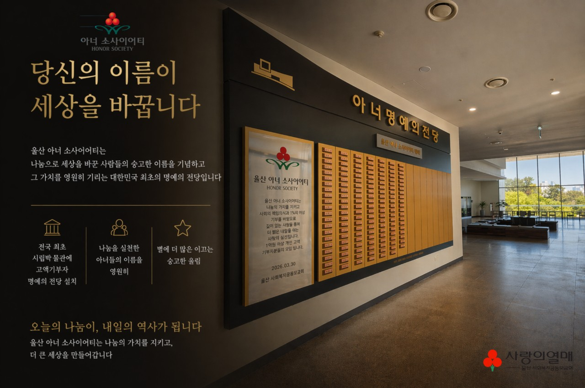

전국 최초
시립박물관에 고액기부자
명예의 전당 설치

Your contact

울산박물관 · 아너 명예의전당
울산 아너 소사이어티는
나눔으로 세상을 바꾼 사람들의 숭고한 이름을 기념하고
그 가치를 영원히 기리는 대한민국 최초의 명예의 전당입니다.
전국 최초
시립박물관에 고액기부자
명예의 전당 설치
나눔을 실천한
아너들의 이름을
영원히
별보다 더 많은
이끄는 숭고한
울림
오늘의 나눔이, 내일의 역사가 됩니다
울산 아너 소사이어티는 나눔의 가치를 지키고, 더 큰 세상을 만들어갑니다.
2007년 12월, 국내 최초의 개인 고액기부자 모임이 시작되었습니다.
아너 소사이어티는 그 이름의 무게를
사회가 함께 기억하기 위한 약속입니다.
About
사랑의열매 사회복지공동모금회가 운영하는 개인 고액기부자 모임입니다. 기부 금액이 아니라, 기부를 선택한 이유를 기록하는 자리입니다.
Before you decide
결정에 앞서 요건과 절차, 세제 혜택을 먼저 확인하십시오. 읽어보신 뒤 편하실 때 연락 주시면 됩니다.
Impact
모인 돈이 어디로 갔는지를 먼저 보여드립니다. 기부를 결정하기 전에 확인하셔야 할 것은 이쪽이라고 생각합니다.
연도별 배분 총액 (억원) · 지원 기관 수
배분 분야 비중
Recognition
예우는 보상이 아니라 기록입니다. 모든 항목은 기부자께서 받으실지 말지를 직접 정하실 수 있습니다.
Donor Wall
울산박물관 1층에 설치된 명패 벽을 그대로 옮겼습니다. 한 장의 황동 명패는 한 사람의 결심입니다.
울산 아너 소사이어티는 나눔의 가치를 지키고 사회적 책임의식과 1% 이상 기부를 바탕으로 깊이 있는 사랑을 통해 더 밝은 내일을 여는 사랑의 실천입니다. 1억원 이상 개인 고액 기부자분들의 모임입니다.
2026. 03. 30 울산사회복지공동모금회Memorial Honors
Stories
기부를 결심한 계기는 저마다 다릅니다. 공개에 동의해 주신 회원들의 이야기를 그대로 싣습니다.
Archive
울산 지역의 가입 현황과 약정 추이를 연도별로 열람하실 수 있습니다. 결정에 참고가 되도록, 해석 없이 기록만 둡니다.
울산 누적 회원 수 (연도 말 기준)
울산 연간 신규 약정 금액 (억원)
연도별 기록 원장
News
울산과 전국의 아너 소식, 그리고 참고할 만한 복지 분야 동향을 모읍니다.
Calendar
Documents
Legacy Giving
FAQ
약정 변경, 기명과 익명, 분할납부 — 가장 많이 받는 질문을 모았습니다.
Your contact
Contact